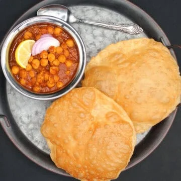

Chole-Bature

Chole Bhature is a popular North Indian dish made with spicy chickpea curry (chole) served with
deep-fried, fluffy bread (bhature). It’s a classic Delhi-style street food often eaten for breakfast
or lunch. The chole is made from white chickpeas simmered in a rich, tangy, and spiced gravy.
Bhature is always served fresh and hot, making the dish hearty and satisfying.
This combo meal is loved for its bold flavors and contrasting textures.
Ingredients:
- 1 tablespoon avocado oil or any neutral oil
- 2 teaspoon cumin seeds
- 2 dried bay leaves
- 1 large red onion (finely diced)
- 1 heaping tsp ginger garlic paste
- 3 medium tomatoes (pureed, or 1 cup canned tomato puree)
- ½ teaspoon turmeric
- ½ teaspoon cayenne (or any red chili powder. If you are using my homemade chana masala powder, keep in mind that it already includes red chili peppers and adjust the heat accordingly)
- 1 tablespoon ground coriander
- 3 cups canned or cooked chickpeas (from two 14 oz cans, or soak 1 cup dried chickpeas overnight, then cook until tender. Strain out all liquid from the chickpeas)
- 1 heaping tbsp chana masala powder
- Salt to taste
- 2 tablespoons cilantro (or wedges of lemon, optional)
- 2 cups whole wheat flour (atta)
- ¼ cup sooji (rava or semolina)
- ½ teaspoon salt
- 1 tablespoon avocado oil or any neutral oil
- ¼ cup vegan yogurt
- Oil for deep frying
- Water (as needed, for kneading)
Steps:
Making the Bhatura dough
- Place all the ingredients - flour, sooji, salt, oil and vegan yogurt - in a large bowl. Use your fingers to mix the oil and yogurt into the flour until it looks grainy.
- Flour for bhature mixed with vegan yogurt, oil and salt.
- Slowly drizzle in the water, a little at a time, and mix until a dough forms. Knead the dough for a couple of minutes, then cover the bowl with a tight lid and set aside for an hour to two hours. The dough should be firm, not sticky or soft. It will become more pliable after it has rested.
- Kneaded dough for bhature.
Make cholé (while the bhatura dough is resting)
Making the Chole gravy
- Heat the oil in a saucepan and add the cumin seeds and bay leaves.
- Cumin seeds and bay leaves in pan.
- When the cumin sizzles, add the onions with some salt and cook until the onions become translucent and the edges start to brown. Add the ginger-garlic paste and sauté for a minute.
- Add the tomato puree followed by turmeric, cayenne and ground coriander. Mix well and cook the puree until it turns a couple of shades darker.
- Tomato puree added to pan.
- Add the chickpeas along with the chana masala powder followed by 2 cups of water. Mix well.
- Chickpeas, chana masala powder and water added to pan.
- Bring to a boil, turn heat to low, cover and simmer the chana for 8-10 minutes so the flavors meld together. Use a potato masher or the back of the ladle to mash some of the chickpeas and thicken the sauce. If you want saucier cholé, add more water. Turn off heat and garnish with cilantro or wedges of lemon before serving.
Make Bhatura
- Knead the rested dough for a few seconds - it should feel much more pliable by now. Divide the dough into eight equal portions and roll each into a ball. Dust one ball with flour.
- One of eight portions of bhatura dough rolled in a ball.
- Use a rolling pin to roll the ball of dough into a circle about six inches in diameter. Roll out the dough as evenly as you can, without any thick or thin spots. Repeat for remaining seven portions.
- Bhatura rolled into six-inch circle.
- Heat oil for frying in a kadhai or wok or pan large enough to hold the bhatura. When the oil is hot enough that a small piece of dough dropped into it sizzles and rises to the surface immediately (around 360 degrees F or 182 degrees C), place a bhatura into the pan. Use a spatula to gently press the bhatura down as it puffs up and rises in the bubbling oil -- this will ensure it cooks evenly. The bhatura should balloon as it rises.
- Bhatura puffing up in hot oil.
- When the bubbling subsides, flip the bhatura and fry another 30 seconds.
- Bhatura after flipping in oil.
- Remove the bhatura to a colander lined with paper towels. Serve the bhaturas with the cholé right away.